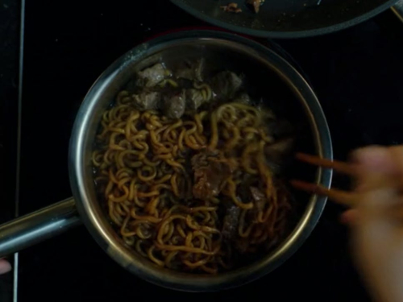

Ramdon

Description
The infamous instant noodle dish topped with high end cubes of beef from the movie Parasite (2019).
Ingredients
- 1 packet of Neoguri (store bought)
- 1 packet of Chapagetti (store bought)
- 1 piece of Korean Hunu Sirloin (Japanese Kobe is a good substitute, or any fancy steak you’re feeling)
Steps
- Trim off some of the excess fat from the steak of your choice and cube it into bite-sized pieces. Sear the cubes in a saucepan with hot oil.
- In some shallow boiling water, place both sets of packaged noodles along with the spicy broth packets and frozen vegetable packets.
- After about 4 minutes, both the noodles and beef should be finished cooking. Drain all but ⅓ cup of the cooking broth and add the chapagetti’s packet of vegetable oil and bean sauce. Mix to combine, it will turn a muddy brown color.
- Add the beef to the noodles and stir. Serve and enjoy!